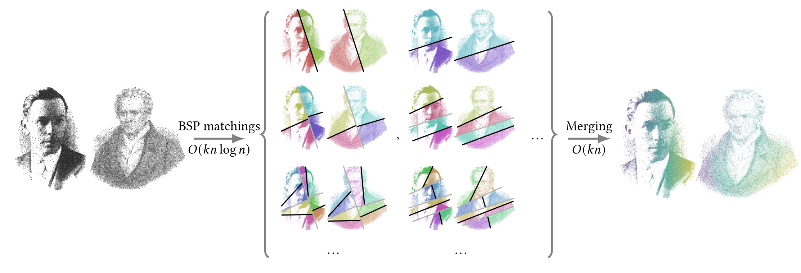
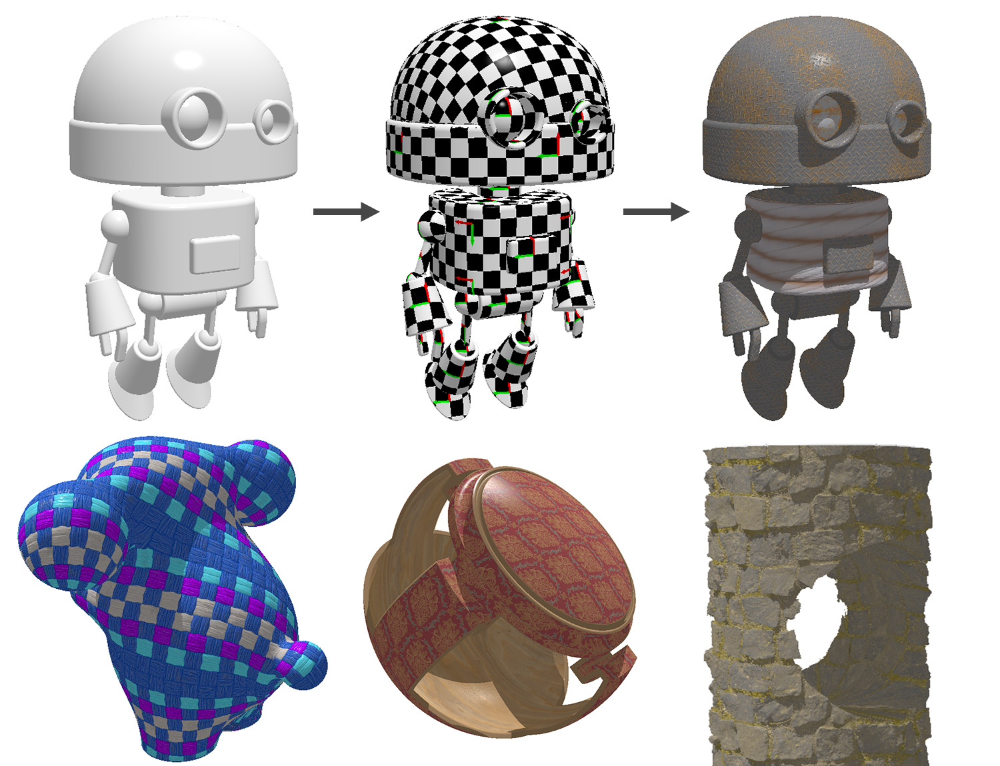
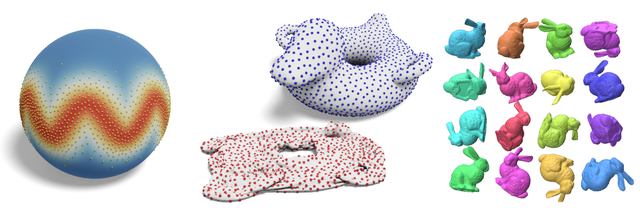

BSP-OT: Sparse transport plans between discrete measures in loglinear time
SIGGRAPH Asia 2025 (journal) - Baptiste Genest, Nicolas Bonneel, Vincent Nivoliers, David Coeurjolly

Implicit UVs: Real-time semi-global parameterization of implicit surfaces
Eurographics 2025 - Baptiste Genest, Pierre Gueth, Jérémy Levallois, Stephanie Wang

Non-Euclidean Sliced Optimal Transport Sampling
Eurographics 2024 - Baptiste Genest, Nicolas Courty, David Coeurjolly
